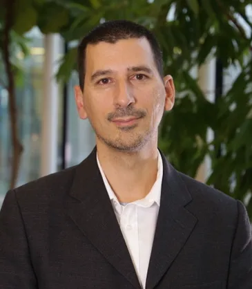

<div class="uk-grid">

<div class="uk-width-4-4@m">
<div class="uk-panel cn-pad-right">

  <h1>Keynotes</h1>


  <h2 id="key1" class="cn-blue" style="clear: both; padding-top: 0.5em;">Emerging market trends and opportunities in Autonomous Networks</h2>

  <h3 class="cnsm-header">Miguel Santos, MASORANGE, Spain</h3>

  <p>Autonomous networks are reshaping digital infrastructure by enabling systems that can self‑configure, self‑monitor, self‑heal, and self‑optimize with minimal human intervention.
Driven by advances in AI, machine learning, and cloud‑native architectures, these networks improve operational efficiency, reduce costs, and enhance resilience.
Key trends include closed‑loop automation, predictive analytics, and integration with emerging technologies such as 5G/6G, edge computing, and network slicing.
As demand for highly dynamic and reliable connectivity grows, autonomous networks will become essential to supporting next‑generation services and complex, distributed environments.</p>

  <h4>Biography</h4>

<p>

<i>Miguel Santos</i> has spent the last 10 years as the Chief Technology Officer at MASORANGE, reporting to the CEO as a member of the Executive Committee, where he was in charge of the Network, IT, O&M, Cybersecurity as well as Products Delivery.
Prior to this, he worked at Vodafone Spain for 20 years managing different roles in the Technology Area (Radio, Transmission, Deployment, TV, Fixed, Strategy, Software development, Product development, …). Miguel has an MBA from the Manchester Business School and the Escuela de Organización Industrial as well as a degree as Telecommunications Engineer. In 2024, he was awarded as CTO of the Year in ‘Gamechanger’ category by Mobile Europe (Forbes).</p>


<h2 id="key2" class="cn-blue" style="clear: both; padding-top: 0.5em;">Towards Energy-Efficient and User-Centric Networks</h2>

<h3 class="cnsm-header">Tobias Hoßfeld, University of Würzburg, Germany</h3>

<p>
</p>

<h4>Biography</h4>

<p>

<i>Tobias Hoßfeld</i> is professor at the Chair of Communication Networks at the University of Würzburg, Germany, since 2018. He finished his PhD in 2009 and his professorial thesis (habilitation) in 2013. From 2014 to 2018, he was head of the Chair "Modeling of Adaptive Systems" at the University of Duisburg-Essen, Germany. Among others, he received several awards for his PhD thesis on the performance evaluation of future internet applications and emerging user behavior; the Fred W. Ellersick Prize 2013 (IEEE Communications Society) for one of his articles on QoE; and the VDE ITG 2024 award for the definition of the scalability index. He is member of the editorial board of IEEE Communications Surveys & Tutorials, Springer Quality and User Experience, ACM SIGMM Records and elected chairperson of the VDE ITG expert group "Communication Networks and Systems" within the German society of Information Technology (ITG). More information: https://comnets.org/hossfeld.
</p>


  <h2 id="key3" class="cn-blue" style="clear: both; padding-top: 0.5em;">The sentient network: telecommunications architecture evolution in the age of AGI</h2>

  <h3 class="cnsm-header">Ignacio Más, Ericsson Research, Sweden</h3>

  <p>In this talk I will give an overview of the evolution of the telecommunications architecture, with focus on the latest development and specially the impact of AI in the way we build and manage telecommunication networks. I would explore the confluence of different technical enablers, like Integrated Sensing and Communication (ISAC), Network Digital Twins and World Models and specially Agentic AI and the Large Language Models applicability in the telco architecture.</p>

  <h4>Biography</h4>

<p>

<i>Ignacio Más</i> is Ericsson Research Fellow in Autonomous Programmable Networks, where he oversees the overall evolution and technical direction of Ericssons vision in his topic over research, development and customer interactions. Previously he has acted as Senior Expert and Head of Technology Strategy in OSS in Ericsson Business Unit Digital Systems, as well as in Ericsson Group Function Technology holding the tittle of Senior Expert in Programmable Network Architecture. Ignacio has represented Ericsson in the Linux Foundation Networking board of directors as well as in TMF collaboration subcommittee. He obtained a PhD in Telecommunications from the Royal Institute of Technology, (KTH, Sweden) and a Master of Science from both KTH and the Telecommunications Engineering school of 'Universidad Politécnica de Madrid'. Ignacio joined Ericsson in 2005 and started working in IETF standardization, IPTV and messaging architectures and media related activities inside Ericsson Research. When he joined Group Function Technology he became the CTO office expert in media, SDN and cloud networking related issues, where he led the company in the evolution to a network architecture focused on flexibility and programmability with emphasis on SDN and NFV technical paradigm implications. </p>


  </div>
</div>
